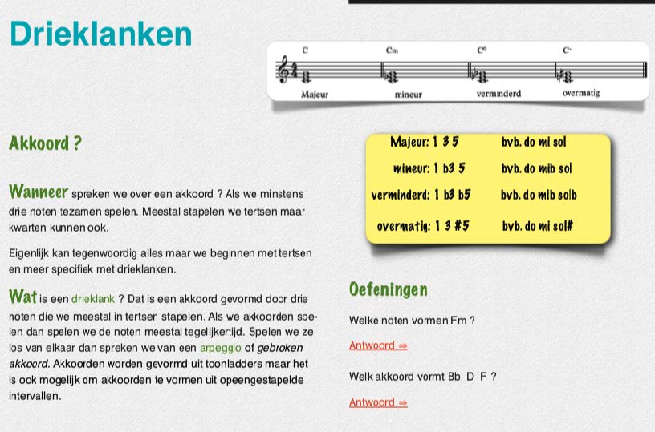
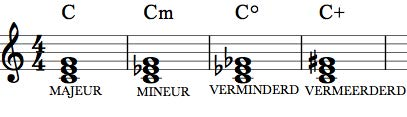

Drieklanken
De vier drieklanken
Akkoordsymbolen
- - voor de majeur akkoorden gebruiken we enkel een hoofdletter
- - voor de mineur akkoorden gebruiken we een hoofdletter en een kleine ‘m’.
- - voor de verminderd akkoorden gebruiken we een hoofdletter en een kleine cirkel ‘o’.
- - voor de vermeerderd akkoorden gebruiken we een hoofdletter en een plusteken.
Er zijn variaties op de notatie van een mineur akkoord bekend, zo worden ook volgende
voorbeelden gebruikt:
Dmi
Dmin
D-